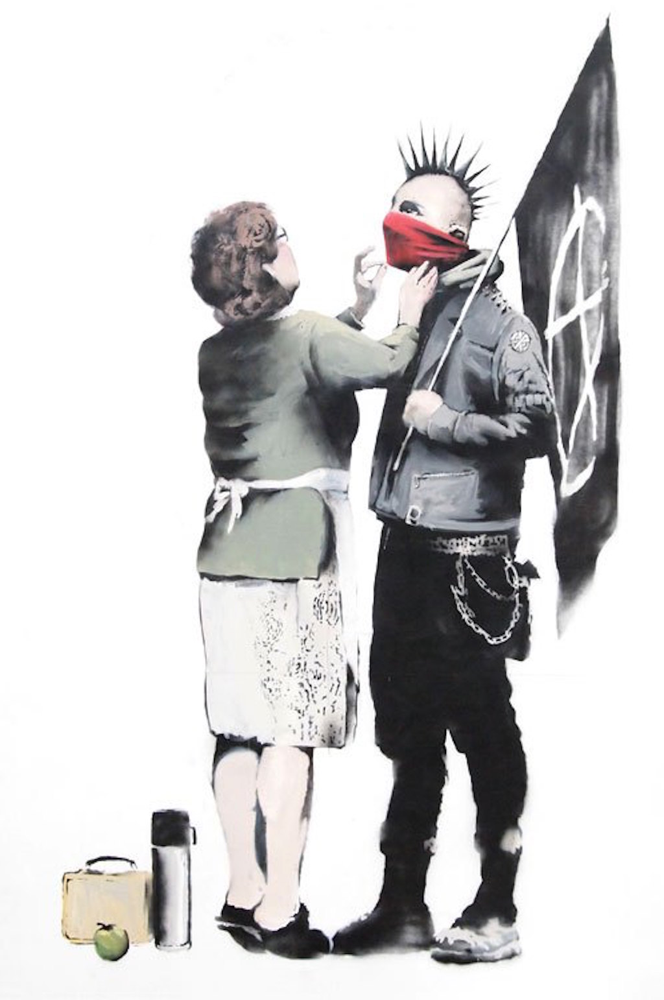

Credit
This piece of Banksy artwork first appeared as part of an exhibit in Bristol titled ‘Banksy Versus Bristol Museum’. Critics state that while this is not one of Banksy’s more subversive artworks it expresses a simple ideal : that a child should be loved and accepted for what he or she is not because the fit with society’e expectations
2009-05
Spray Paint
Bristol, UK